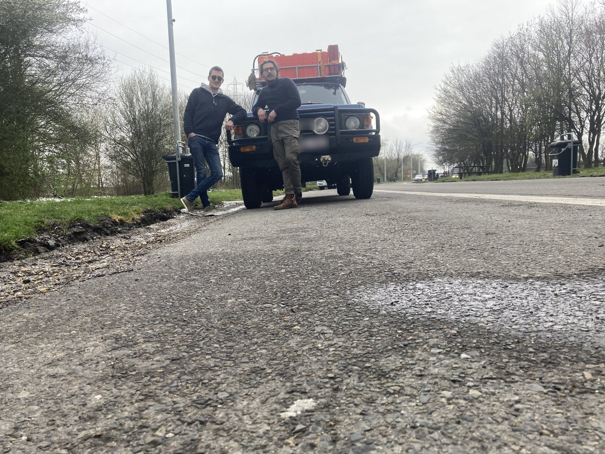
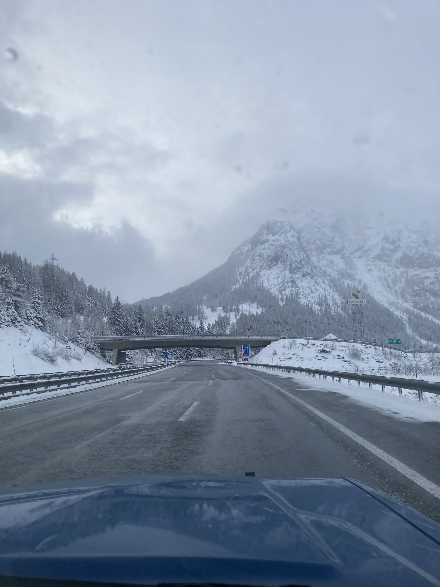
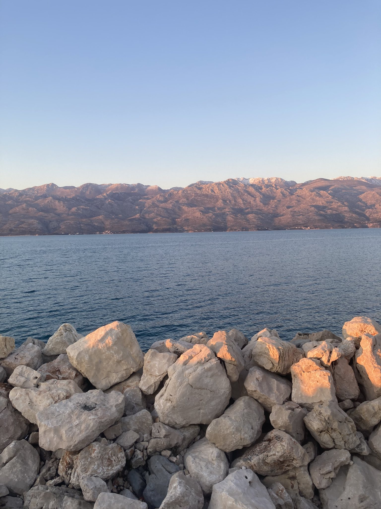
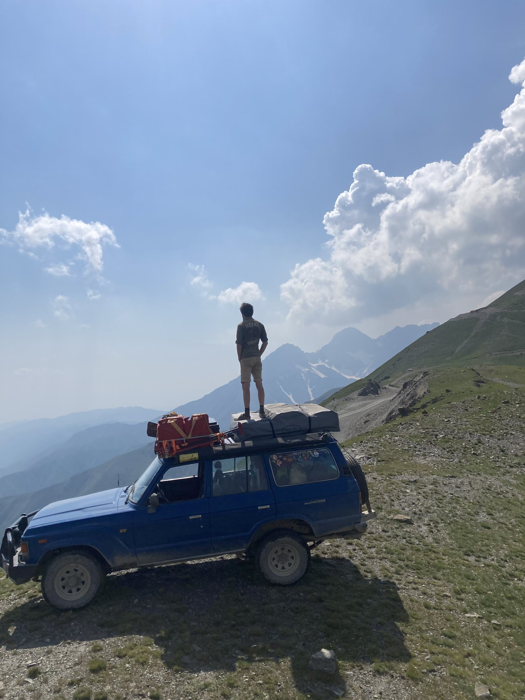
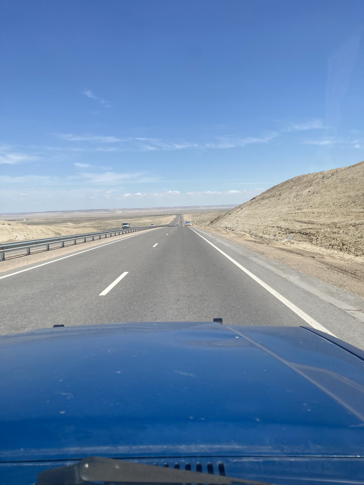
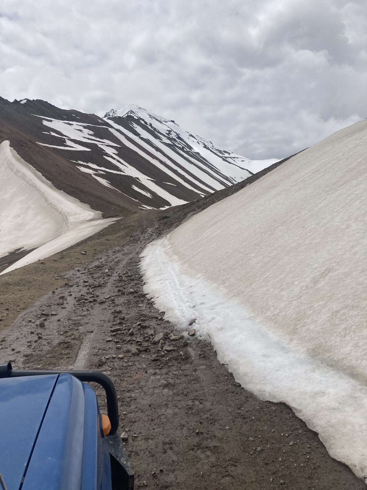

One truck.
88 days apart.
Sandy, our 1984 Land Cruiser, wired in Belgium before day 1: 120Ah LiFePO4, 2500W inverter, a solar panel. The whole trip: six months, 17 countries.
Our story → link in bio





The turning point.
Sandy, our 1984 Land Cruiser, wired in Belgium before day 1: 120Ah LiFePO4, 2500W inverter, a solar panel. The whole trip: six months, 17 countries.
Our story → link in bio